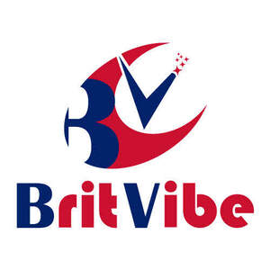

Trade Mark Journal No.2025/024 13 June 2025
UK00004208881 25 May 2025 (6,16,20,21,24,28)

- Class 6
- Foil (Aluminium -); Aluminium foil; Aluminum foil paper; Aluminium foil paper; Metal foil; Aluminum; Aluminium foil paper laminates; Aluminium foils; Foil of metal for packaging; Aluminum foil for cooking purposes; Aluminum alloy; Aluminium foil for cooking purpose; Metal foil for cooking; Metallic foil for packaging; Aluminum alloys; Metallic foil for cooking; Aluminium; Preserving foils of aluminium; Metal foil for wrapping purposes; Foils of metal for wrapping; Wrapping and packaging (Foils of metal for -); Sheets of aluminium; Aluminium sheets; Foils of metal for cooking; Alloys of metal containing calcium and aluminium; Foils of metal for covering.
- Class 16
- Plastic bags for packaging; Plastic foil for packaging; Carrier bags of paper or plastic; Plastic bags for packing; Shopping bags of paper or plastic; Plastic shopping bags; Food wrapping plastic film; Food bags of paper or plastics; Food waste bags of biodegradable plastic for household use; Plastic food storage bags for household use; Food wrapping plastic film for household use; Plastic film roll stock for packaging food; Biodegradable paper pulp-based to-go containers for food; Paperboard trays for packaging food; Paper take-out cartons for food; Food wrappers; Plastic bags for packaging ice; Plastic sandwich bags; Packaging materials of plastic for sandwiches; Plastic materials for packaging; Plastic material for packaging; Plastic bags for household use; Paper; Napkin paper; Napkins of paper; Paper tea filters; Paper doilies; Paper towels; Towels of paper; Tissue paper for making stencil paper; Filters (Paper coffee -); Coffee filters (Paper -); Paper coffee filters; Coffee filters of paper; Paper filters for coffee; Paper bags; Bags of paper; Paper and cardboard; Rice paper; Cloth paper; Paper toilet bowl liners; Serviettes of paper; Paper serviettes; Toilet paper; Bottle wrappers of cardboard or paper; Bottle wrappers of paper or cardboard; Greaseproof paper; Notebook paper; Paper for use in the manufacture of tea bags; Newsprint paper; Bottle envelopes of cardboard or paper; Bottle envelopes of paper or cardboard; Paper handtowels; Napkins of paper (Table -); Table napkins of paper; Paper table napkins; Crepe paper; Paper lace; Hand towels of paper; Paper hand towels; Paper containers; Paper ribbon; Baking paper; Paper hand-towels; Face towels of paper; Cream containers of paper; Vellum paper; Ribbons (Paper -); Ribbons of paper; Coasters of paper; Paper coasters; Ovenproof paper; Table linen of paper; Paper stationery; Table runners of paper; Paper boxes.
- Class 20
- Covers for clothing [wardrobe].
- Class 21
- Plastic bottles; Plastic cups; Plastic buckets; Plastic plates; Tablemats of plastic; Planters of plastic; Cups of paper or plastic; Plastic funnels; Plastic water bottles; Food storage containers; Foil food containers; Household containers; Household or kitchen containers; Containers for cosmetics; Collapsible buckets; Bowls; Glass goldfish bowls; Glass bowls; Bowls (Glass -); Suction bowls; Soup bowls; Plastic bowls [basins]; Goldfish bowls; Collapsible non-electric kettles; Mixing bowls; Glass bowls for live goldfish; Plastic bowls [household containers]; Shallow bowls; Salad bowls; Biodegradable bowls; Fruit bowls of glass; Compostable bowls; Bowls for candy; Fruit bowls; Flower bowls; Japanese-style soup bowls [wan]; Fish bowls; Finger bowls; Basins [bowls]; Bowls [basins]; Portable beverage container holders; Reusable stainless steel water bottles sold empty; Shaving bowls; Serving bowls; Japanese style soup serving bowls (wan); Japanese rice bowls (chawan); Japanese rice bowls [chawan]; Serving bowls (hachi); Serving bowls [hachi]; Pet feeding bowls, automatic; Sugar bowls; Reusable stainless steel water bottles; Bowls for nuts; Japanese rice bowls of precious metal (chawan); Plastic water bottles [empty]; Pet drinking bowls; Plastic bag holders for household use; Aluminum water bottles, empty; Juice box holders made of plastic; Plastic containers for dispensing drink to pets; Plastic juice box holders; Fitted toilet bags; Bowls for plants; Combined lids for kitchen containers; Biodegradable paper pulp-based bowls; Pot lid racks; Bowls for floral decorations; Foldable insulated food covers; Pet feeding bowls; Plastic buckets for storing bath toys; Portable pots and pans for camping; Mixing spoons [kitchen utensils]; Fitted picnic baskets; Mop buckets; Mop wringers; Mop pails incorporating mop wringers; Mop pails; Mops; Mop wringer buckets; Mop heads; Mop squeezers; Rag mops; Wringer mops; Buckets incorporating mop wringers; Swivel mops; Mopping brushes; Floor wax applicators mountable on a mop handle; Cloth for washing floors; Washing floors (Cloth for -); Scrubbing brushes; Squeegee sponges; Abrasive sponges for kitchen [cleaning] use; Cleaning (Rags [cloth] for -); Rags [cloth] for cleaning; Rags for cleaning; Cleaning rags; Pot cleaning brushes; Rinsing buckets; Lint rollers for floors; Broom handles; Brushes for cleaning; Cleaning brushes; Fitted dispensers for wiping, drying, polishing and cleaning paper; Cleaning cloth; Microfiber cloths for cleaning; Hair fixer dispensers; Bottle cleaning brushes; Brushes for washing up; Dishwashing brushes; Brushes (Dishwashing -); Cleaning sponges; Lint brushes; Abrasive gloves for scrubbing vegetables; Fitted holders for wiping, drying, polishing and cleaning paper; Disposable duster sleeves for cleaning; Tongue cleaning brushes; Cleaning brushes for teapot spouts; Washing brushes; Washing-up brushes; Fitted racks for wiping, drying, polishing and cleaning paper; Dusting cloths [rags]; Floor brushes; Dusting brushes; Abrasive mitts for scrubbing the skin; Cleaning cloths; Cloths for cleaning; Squeegees [hand-operated] for cleaning; Toilet brush holders; Shampoo brushes; Abrasive sponges for scrubbing the skin; Skin (Abrasive sponges for scrubbing the -); Scrub sponges; Soap dispensing dish brushes; Brooms; Cleaning combs; Adhesive rollers for cleaning; Adhesive refill sheets for rollers for cleaning; Toothbrush bristles; Squeegees [cleaning instruments]; Toilet brushes; Window groove cleaning brushes; Brooms for cleaning purposes; Hand towel dispensers, other than fixed; Wiping cloth for wiping eye glasses; Rug sweepers; Interdental brushes for cleaning the teeth; Pet feeding and drinking bowls; Japanese rice bowls not of precious metal (chawan); Japanese rice bowls not of precious metal [chawan]; Mixing cups; Flower bowls of precious metal; Sugar bowls of precious metal; Bowls of precious metal; Soup tureens; Spoon rests; Serving scoops [household or kitchen utensil]; Sugar bowls [not of precious metal]; Wash basins [bowls, not parts of sanitary installations]; Salad tongs; Hair tinting bowls; Slotted spoons; Saucepan lids; Serving spoons; Chip pan baskets; Prize cups of porcelain, ceramic, earthenware, terra-cotta or glass; Bowls made of precious metal; Utensil jars; Wash basin pitchers; Cup lids; Rice paddles [cooked rice serving scoops]; Bathroom ladles; Pot scrapers; Bathroom glass holder; Dish brushes; Egg cups; Cups (Egg -); Glass cups; Batter dispensers for kitchen use; Cupcake baking cups; Pot lids; Basting spoons, for kitchen use; Spoons (Basting -), for kitchen use; Commemorative statuary cups of porcelain, ceramic, earthenware, terra-cotta or glass; Scoops [tableware]; Fruit cups; Cups (Fruit -); Earthenware floor vases; Plastic containers for dispensing food to pets; Reusable silicone food covers; Containers for bird food; Thermal insulated bags for food or beverages; Thermal insulated containers for food or beverage; Thermal insulated containers for food or beverages; Thermal insulated tote bags for food or beverages; Lockable non-metal household containers for food; Food basters; Plastic plates [dishes]; Food containers for pet animals; Household containers for storing pet food; Household plastic gloves; Paper cups; Paper baking cups; Baking cups of paper; Biodegradable paper pulp-based cups; Cardboard cups; Holders for toilet paper; Toilet paper holders; Holders (Toilet paper -); Coffee cups; Paper towel dispensers; Paper plates; Tea cups; Plates (Paper -); Cup holders; Kitchen paper holders; Paper hand towel dispensers; Cups; Dispensers for paper towels; Dispensers for paper hand towels; Glass bottles; Glass decanters; Opaline glass; Glass carafes; Glass vases; Opal glass; Glass (Opal -); Glass jars; Glass plates; Glass flasks; Enamelled glass; Glass mugs; Glass tableware; Glass containers; Candlesticks of glass; Glass candlesticks; Glass ornaments; Glass flowerpots; Decorative stained glass; Ornamental glass; Glass pots; Porous glass; Figurines of glass; Glass caps; Statuettes of glass; Unworked glass [except glass used in building]; Unworked glass, except building glass; Glass dishes; Stained glass figurines; Glass powder; Boxes of glass; Statues of glass; Glass stoppers for bottles; Busts of glass; Glass pans; Plaques of glass; Pressed glass; Artworks of glass; Planters of glass; Polished plate glass; Signboards of porcelain or glass; Glass holders; Decorative glass spheres; Glass flasks [containers]; Plate glass being unworked; Jars (Glass -) [carboys]; Glass jars [carboys]; Drinking glass holders; Jardinieres of glass.
- Class 24
- Picnic blankets; Blanket throws; Lap blankets; Sofa blankets; Cot blankets; Bed blankets; Blankets (Bed -); Baby blankets; Blankets for outdoor use; Woolen blankets; Quilted blankets [bedding]; Swaddling blankets; Hooded blankets; Woollen blankets; Cotton blankets; Bed linen and blankets; Bed clothes and blankets; Bed blankets made of cotton; Silk bed blankets; Yoga blankets; Silk blankets; Blankets with sleeves; Sleeping bags for camping; Quilts of towel; Travelling blankets; Bed warmer covers; Bed blankets made of man-made fibres; Drink coasters of table linen; Quilt bedding mats; Receiving blankets; Cloth bunting; Nap raised cloth; Cloth with a raised nap; Bivouac sacks being covers for sleeping bags; Canopies (bed linen); Plastic table cloths; Children's blankets; Gift wrap of fabric; Coasters [table linen]; Kitchen towels of cloth; Sanitary flannel; Flannel (Sanitary -); Cloth napkins; Table cloths not of paper; Table cloths, not of paper; Bed linen and table linen; Textile napkins [table linen]; Table cloths; Cot bumpers [bed linen]; Bath wrap towels; Oilcloth for use as tablecloths; Bed quilts; Afghans [knitted covers]; Jersey fabrics for clothing; Textile piece goods for clothing; Fabric for use in the manufacture of clothing.
- Class 28
- Plastic toys; Christmas tree ornaments; Christmas tree decorations; Christmas tree skirts; Non-edible christmas tree ornaments; Christmas tree [synthetic]; Musical Christmas tree ornaments; Toy Christmas trees; Christmas tree stands; Ornaments for Christmas trees; Christmas tree decorations and ornaments; Decorations for Christmas trees; Christmas tree stand covers; Tinsel for decorating Christmas trees; Christmas tree decorations [other than edible or for illumination]; Decorations and ornaments for Christmas trees; Bells for Christmas trees; Candle holders for Christmas trees; Artificial Christmas trees; Christmas trees (Artificial -); Ornaments for Christmas trees, except lights, candles and confectionery; Snow for Christmas trees (Artificial -); Artificial snow for Christmas trees; Christmas stockings; Festive decorations, party novelties and artificial Christmas trees; Ornaments for Christmas trees, except illumination articles and confectionery; Christmas trees (Ornaments for -), except illumination articles and confectionery; Christmas dolls; Christmas crackers; Christmas trees of synthetic material; Christmas trees of synthetic materials; Christmas crackers [party novelties]; Explosive bonbons [Christmas crackers]; Bonbons (Explosive -) [Christmas crackers]; Toy dolls; Toy playsets; Toy figurines; Toy robots; Toy furniture; Toys; Toy putty; Toy balls; Toy cars; Toy balloons; Toy airplanes; Toy xylophones; Toy bakeware and toy cookware; Toy glockenspiels; Toy pistols; Pistols (Toy -); Toy vehicle playsets; Toy aeroplanes; Toy harmonicas; Toy pianos; Toy guns; Toy rockets; Toy scooters; Toy figures; Toy gliders; Toy fireworks; Toy prams; Toy bakeware; Toy vehicles; Toy weapons; Toy jewellery; Toy tableware; Toy models; Toy animals; Radio-controlled toy robots; Toy trains; Toy strollers; Toy figure playsets; Toy action figurines; Toy trucks; Toy mobiles; Ride-on toys; Radio-controlled toys; Toy automobiles; Toy food; Toy dogs; Ride-on toy vehicles; Toy guitars; Toy watches; Toy boats; Toy pinwheels; Toy binoculars; Wind-up toys; Toy cookware; Toy swords; Toy bicycles; Toy holsters; Toy armor; Toy aircraft; Toy brooches; Toy whistles; Toy sets; Toy horns; Radio-controlled toy vehicles; Vehicles (Radio-controlled toy -); Toy microscopes; Toy fish; Toy pushchairs; Toy dough; Toy hats; Toy telescopes; Toy castles; Radio-controlled toy airplanes; Toy cameras; Toy wheelbarrows; Toy wagons; Radio-controlled toy aeroplanes; Toy lorries; Toy tools; Toy birds; Clothing for toy figures; Toy fingernails; Remote-controlled toy vehicles; Toy projectors; Toy periscopes; Toy telephones; Toy microphones; Toy model cars; Plush toys; Toy plants; Toy houses; Toy blocks; Miniature car models [toys or playthings]; Inflatable ride-on toys; Toy miniature model boats; Radio-controlled toy helicopters; Toy trumpets; Collectable toy figures; Modeled plastic toy figurines; Remote-controlled toy planes; Toy windmills; Model toys; Stuffed toy animals; Masks (Toy -); Toy masks; Toy flowers; Cuddly toys; Toy arrows; Pet toys; Toy model vehicles; Fidget toys; Battery-operated action toys; Windup toys; Toy musical boxes; Children's ride-on toy vehicles; Stuffed toys; Inflatable toys; Toy model kits; Toy banks; Play mats for use with toy vehicles [playthings]; Dog toys; Model cars [toys or playthings]; Toy garages; Toy music boxes; Bendable toys; Rockets being toy models; Toy tents; Toy sewing sets; Toy pedal cars; Positionable toy figures; Toy foam hands; Wooden toys; Toy sling planes; Toy car tracks; Toy model kit cars; Toy racing sets; Toy nuchukus; Toy action figures; Toy trick noisemakers; Clockwork toys; Toy model hobbycraft kits; Stuffed toy bears; Toy cap pistols; Paper airplanes; Paper dolls.
Britvibe Limited